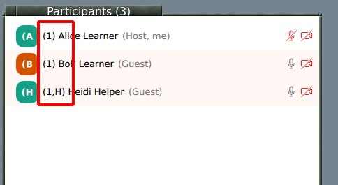
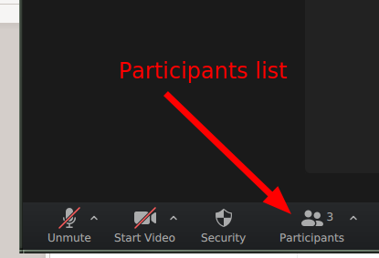
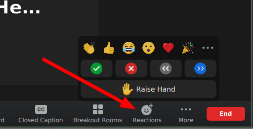

Zoom mechanics and controls
Basics
Most Zoom controls are probably well known by now, but if not, view Zoom’s basic guide
Mute and unmute yourself from the buttons on bottom.
You can rename yourself from the participants list (hover over your name.
We don’t use Zoom chat for typical questions: use HackMD instead.
Chat OK for administrative questions.
Audio/video on or off?
Main room: OK to have off, stay muted.
Breakout rooms: Try to leave on for most interactive atmosphere.
Your name should indicate your breakout room
When joining, please use the name you used to register for the course.
Have your breakout room number in your name:
(number) Your Name
(number,H) The Name for helpers

Rename yourself in a meeting by starting participants list:

Rename is found if you hover your name and click “more”

Breakout rooms
Click the “breakout rooms” button at bottom and you can join a room.
You can click “Join” to join your own room.
If you are joined via web, make sure your name is correct (see above) and use Zoom chat to ask host to assign you to the room.
Return to main room: “Leave” button at bottom has an option for “Return to main room”.
Reactions
We watch the participant list and can see these reactions (in the application):

Task completed: Green check
Technical problem: Red X
Need more time: Slower “<<”
You can signal go faster and go slower
You can Raise your hand
Other settings

Automatic fullscreen when screenshare starts can be turned off
Dual monitor mode makes separate windows for screenshare and participants
See also
The old version of this document is available at Zoom mechanics and controls.
This is licensed under CC-BY and we encourage and appreciate reuse, modifications, and contributions.